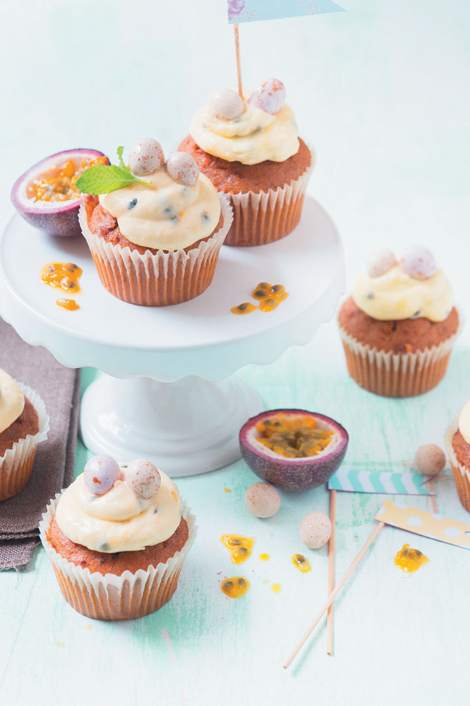

Carrot cupcakes with granadilla white chocolate and cream icing
Prep Time:
40 mins
Yeild:
6
Ingredients
Carrot cupcakes with granadilla
white chocolate
cream cheese icing include a wonderful fruity zing that the classic version just doesn’t have
Steps
Melt 100g finely chopped white chocolate in a heatproof bowl in the microwave on high until smooth, about 1 minute.
Stir every 20 seconds. Using an electric mixer, cream 55g softened salted butter, 85g icing sugar and 5ml (1 tsp) vanilla essence together, 1 minute.
Whisk in the melted chocolate until combined.
Add 1 tub (230g) plain cream cheese at room temperature and 75g granadilla pulp, and whisk until smooth.
Pipe the icing onto 12 store-bought carrot muffins and decorate with Easter eggs.